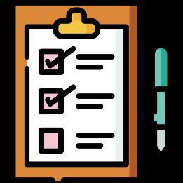
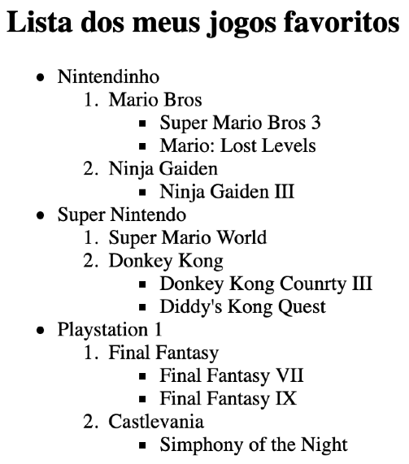

Pare para pensar por um só minuto: quantas listas você faz na
sua vida? Eu, sinceramente não vivo sem listas: a lista do
supermercado, lista de tarefas, a lista de chamada dos meus
alunos, listas dos conteúdos a trabalhar cada semestre, lista de
cursos que quero fazer, lista de cursos que quero produzir.
Acho que já deu pra entender, não é?

Para quem produz conteúdo, listas também são muito úteis.
Elas simplificam e sintetizam o conteúdo a ser passado e faz a demarcação de cada item para facilitar a
visualização.
Por conta disso, a linguagem HTML disponibiliza vários tipos de lista para produzirmos
nosso conteúdo e deixá-lo mais claro e eficiente.
Listas Ordenadas
A HTML chama de ordered lists todas aquelas listas onde a ordem dos
itens é algo
muito importante. Um passo-a-passo para criar um bolo, uma lista de aprovados no
vestibular e uma lista com os carros mais caros do mundo são exemplos de listas
ordenadas.
Para criar uma ordered list, vamos usar a tag <ol> para delimitar a lista e
<li> (list
item) para identificar cada item da lista.
<ol>
<li>Item 1</li>
<li>Item 2</li>
<li>Item 3</li>
<li>Item 4</li>
<li>Item 5</li>
</ol>
Item 1
Item 2
Item 3
Item 4
Item 5
IMPORTANTE!
Segundo a W3C, a tag <ol> é de fechamento
obrigatório (ou seja, devemos sempre usar </ol>. Já a tag
<li> tem
seu fechamento opcional a partir da HTML5.
A tag <ol> possui um parâmetro type, onde configuramos o tipo
de marcador da lista
atual. As opções de valores para esse parâmetro são:
‣ A - Cria listas alfabéticas em maiúsculas. Ex: A, B, C, D, …
‣ a - Cria listas alfabéticas em minúsculas. Ex: a, b, c, d, …
‣ I - Cria listas com algarismos romanos em maiúsculas. Ex: I, II, III, IV, …
‣ i - Cria listas com algarismos romanos em minúsculas. Ex: i, ii, iii, iv, …
Você também pode indicar o início da contagem usando o parâmetro start.
Por exemplo, a tag <ol type=“I” start=“5”> gerar itens numerados como
V, VI, VII, VIII, IX, …
Listas não Ordenadas
Se você compreendeu a criação de listas ordenadas, com certeza vai entender as
unordered liststambém chamadas de listas com marcadores, que são aquelas onde
a ordem dos itens não influenciará no significado da lista. Ela é apenas uma ótima
maneira para organizar os itens que não apresentam uma classificação
necessariamente.
Para criar uma unordered list, vamos usar a tag <ul> para delimitar a lista e a tag
<li> para criar cada um dos seus itens internos.
<ul>
<li>Item 1</li>
<li>Item 2</li>
<li>Item 3</li>
<li>Item 4</li>
<li>Item 5</li>
</ul>
Item 1
Item 2
Item 3
Item 4
Item 5
O marcador padrão é a bolinha preta totalmente preenchida (circle), mas existe a
opção de configurar a propriedade type a tag <ul> com os seguintes
valores:
‣ disc - padrão. Uma bola preta totalmente pintada
‣ circle - Uma bola com uma borda preta e sem preenchimento
‣ square - Um pequeno quadrado preto totalmente pintado
Misturando as coisas
Podemos também criar listas mistas, configurando listas dentro de outras listas. Veja
o exemplo a seguir:
<ol>
<li>Item 1</li>
<li>Item 2</li>
<ol type="a">
<li>Item 2.1</li>
<li>Item 2.2</li>
<li>Item 2.3</li>
</ol>
<li>Item 3</li>
<li>Item 4</li>
<li>Item 5</li>
</ol>
Item 1
Item 2
Item 2.1
Item 2.2
Item 2.3
Item 3
Item 4
Item 5
Note que os itens da lista interna (a, b, c, …) está deslocado para a direita em relação
ao item 2, do qual essa sub-lista é filha.
DICA:
Além de
aninhar listas ordenadas, podemos juntar listas <ul>
com <ol> e vice-versa. As listas internas sempre terão deslocamento
interno para a direita.
Exercício proposto
Crie seu próprio código e faça a seguinte lista aninhada com seus jogos favoritos ou escolha um tema de sua
preferência seguindo o modelo proposto abaixo.

Listas dos meus filmes favoritos
ANTOLOGIAS - SAGAS
Harry Porter
Harry Potter e a Pedra Filosofal
Harry Potter e a Câmara Secreta
Harry Potter e o Prisioneiro de Azkaban
Harry Potter e o Cálice de Fogo
Harry Potter e a Ordem da Fênix
Harry Potter e o Enigma do Príncipe
Harry Potter e as Relíquias da Morte - Parte 1
Harry Potter e as Relíquias da Morte - Parte 2
MARVEL
Vingadores
Capitão América: O Primeiro Vingador (1943-1945)
Capitã Marvel (1995)
Homem de Ferro (2010)
Homem de Ferro 2 (2011)
O Incrível Hulk (2011)
Thor (2011)
Os Vingadores (2012)
Homem de Ferro 3 (2012)
Thor: O Mundo Sombrio (2013)
Capitão América: O Soldado Invernal (2014)
Guardiões da Galáxia (2014)
Guardiões da Galáxia Vol. 2 (2014)
Vingadores: Era de Ultron (2015)
Homem-Formiga (2015)
Capitão América: Guerra Civil (2016)
Homem-Aranha: De Volta ao Lar (2016)
Viúva Negra (2016)
Pantera Negra (2016)
Doutor Estranho (2016-2017)
Thor: Ragnarok (2017)
Homem-Formiga e a Vespa (2017)
Vingadores: Guerra Infinita (2017)
Vingadores: Ultimato (2018-2023)
O Senhor dos Anéis / Hobbit
O Hobbit
O Hobbit: Uma Jornada Inesperada (2012)
O Hobbit: A Desolação de Smaug (2013)
O Hobbit: a Batalha dos Cinco Exércitos (2014)
O Senhor dos Anéis
O Senhor dos Anéis: Os Anéis do Poder (2022)
O Senhor dos Anéis: A Sociedade do Anel (2001)
O Senhor dos Anéis: As Duas Torres (2002)
O Senhor dos Anéis: O Retorno do Rei (2003)
Tenha paciência e dedique-se, com certeza você vai conseguir fazer uma lista como
essa aí em cima e vai aprender muito sobre HTML.
Lista de Definições
É como se fosse um dicionário, temos os termos e as suas descrições. É uma lista sem
demarcadores, mas bem útil em alguns casos.
Toda lista de definições está dentro de uma tag <dl></dl>
(definition list) Cada
termo é um <dt> (definition term) e cada descrição é um
<dd>definition description).
Assim como os itens da lista, essas duas últimas tags possuem fechamento opcional,
segundo a referência oficial da HTML5.
Vamos ver um exemplo simples que cria uma lista com três definições que já
conhecemos bem aqui pelo curso.
<dl<
<dt>HTML</dt>
<dd>Linguagem de marcação utilizada para criar o conteúdo de
sites.</dd>
<dt>CSS</dt>
<dd>Linguagem de marcação para a especificicação de estilos em
sites.</dd>
<dt>JavaScript</dt>
<dd>Linguagem de programação para criar interatividades em sites.</dd>
</dl>
Abaixo temos o resultado do código executado pelo navegador
👇
HTML
Linguagem de marcação utilizada para criar o conteúdo de sites.
CSS
Linguagem de marcação para a especificicação de estilos em sites.
JavaScriptdt>
Linguagem de programação para criar interatividades em sites.
Cada navegador pode mostrar um resultado ligeiramente diferente para listas de
definição, mas o que mais importa é o significado desse tipo de listagem, pois ele
relaciona diretamente os pares Termo + Descrição e isso nos ajuda bastante com
mecanismos de busca
Hora de exercitar
Em HTML5, temos vários tipos de
lista. Qual dos itens a seguir não é um
tipo de lista suportado pela linguagem?
lista ordenada
lista não ordenada
lista semi ordenada
lista de definição
Na construção das listas ordenadas e
nas não ordenadas, o uso de uma das
tags se repete nos dois casos. Que tag é
essa?
<ul>
<ol>
<li>
<dl>
Para criar uma lista ordenada,
devemos limitar todos os seus itens
dentro de um par único de tags:
<ol> e </ol>
<ul> e </ul>
<dl> e </dl>
<dt> e </dt>
Segundo as novas normas da W3C,
qual das tags de lista a seguir é a única
que possui fechamento opcional?
<dt>
<dd>
<ol>
<li>
Em listas ordenadas, podemos usar o
parâmetro type para modificar o
formato da contagem e o parâmetro
start para mudar o número inicial da
contagem.
type / init
style / start
type / start
style / init
Ao personalizar a numeração de uma
lista ordenada, podemos indicar vários
tipos de contagem. Qual das opções a
seguir é a única que não pode ser usada
para essa personalização?
1
A
I
x
Podemos personalizar as listas não
ordenadas, configurando o parâmetro
type da tag <ul> com alguns valores
especiais. Qual dos elementos a seguir é
o único aceito para modificar o marcador
padrão dos itens?
star
square
rectangle
triangle
Todos os elementos de uma lista de
definições devem estar limitados entre o
par de tags:
<dt> e </dt>
<dd> e </dd>
<dl> e </dl>
<dc> e </dc>
A tag <dt> em uma
lista de definição
tem o significado de:
definition term
description text
definition text
description term
A tag <dd> em uma
lista de
definição tem o significado de: